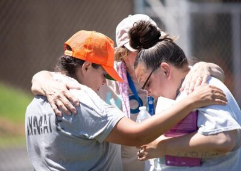

The mission of CFC’s Jail Ministry is to serve the needs of incarcerated men and women, and their families, primarily in the Loudoun County geographic area, by bringing them hope through the Gospel of Jesus Christ and addressing material and emotional support needs during and after incarceration in partnership with organizations in Northern Virginia. CFC is the coordinator of the Emmaus Bible study curriculum which we offer to every resident of the Loudoun County Adult Detention Center (ADC).
Pray for weekly requests from residents at the Loudoun County ADC and other Department of Correction (DOC) facilities.
Grade, comment and encourage Emmaus correspondence class students as they complete courses and submit course answer sheets. (Automated grading tools provided.)

Provide one-on-one discipling/mentoring of same-gender incarcerated individuals at the Loudoun County ADC. Background check, interview, and training required by the Loudoun County Sheriff’s Office.
Lead in-person, four-week Bible studies at the Loudoun County ADC using CFC-developed lesson plans based on Emmaus Bible courses.
Our ministry includes pre-release; post-release; and family support. As God leads you, you can be involved by being a regular prayer warrior, Bible correspondence course grader, or a Bible study leader or mentor. Training, coaching, and encouragement are provided for all involved. Spanish-speaking or bilingual volunteers needed for Spanish-speaking ADC residents.
Sign Up to Serve